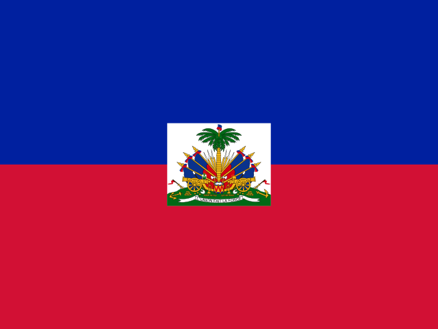

ハイチ
Haiti / 北アメリカ(カリブ)
No.72
📍 位置
カリブ海のイスパニョーラ島西部に位置する国。島の東側はドミニカ共和国。
🏙 首都
ポルトープランス
👥 人口
約1,150万人
🏛 政治体制
共和制
💰 通貨
グールド(HTG)
🏗 建国年
1804年
📖 成り立ち
ハイチはフランスの植民地サン＝ドマングであったが、奴隷たちによる蜂起（ハイチ革命）を経て1804年に独立を宣言し、世界初の黒人による共和国となった。
🗣 言語
- フランス語
- ハイチ語(クレオール語)
🎎 民族
- アフリカ系
🍜 有名な食べ物
グリオ(揚げ豚肉)、ディリ・ジョンジョン(黒米)
🏔 自然・地形
山がちな地形、カリブ海の海岸線
🦁 生息動物
🏳 国旗の由来
上が青、下が赤の横じまに、中央に白い国章を配した国旗。青は黒人系住民、赤は混血系住民を表すとされ、フランスの三色旗から白を除いて作られたという由来が伝わる。
💡 トリビア
1804年に世界初の黒人共和国として独立した国。
📜 ことわざ・名言
「山の向こうにも、また山がある」— 一つの困難を越えても、次の困難が待っているという意味のことわざ。
🇯🇵 日本とのつながり
2010年のハイチ地震の際、日本の国際緊急援助隊が派遣され復興支援に協力した。
🗺 観光名所
- シタデル要塞
- サンスーシ宮殿跡
- ポルトープランスの市場
🎬 関連動画
準備中です。